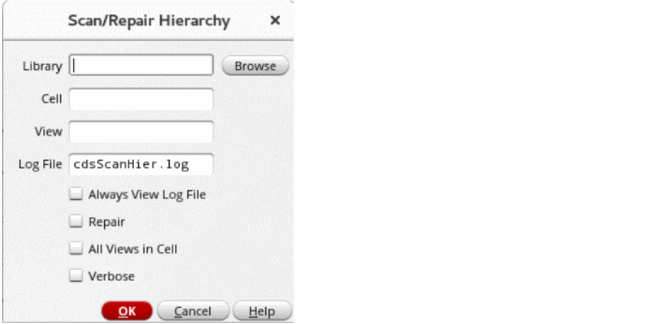

Scanning a Hierarchy
You can scan all the cellviews in a specific design hierarchy, starting from a specified top-level cellview. oaScan traverses the design hierarchy and generates a shell script containing one oaScan call for each cellview in the hierarchy.
-
From the CIW menu bar, choose oaScan – Scan Hierarchy.
The Scan/Repair Hierarchy form is displayed. - Specify the library, cell and view names of the top-level cellview.
-
Specify a name for the log file (the default is
cdsScanHier.log). - Check the Always View Log File box to specify that the log file is always displayed on the view-file window on completion of the scan even if there are no issues found.
- Check the Repair box to automatically repair any issues found in the design hierarchy.
- Check the All Views in Cell box to scan all the views present in the specified cell. If this option is not selected, only the cellviews referenced in the design hierarchy are scanned.
- Check the Verbose box to view the name of the databases that oaScan is processing.
- Click OK to scan the hierarchy.
Related Topics
Return to top